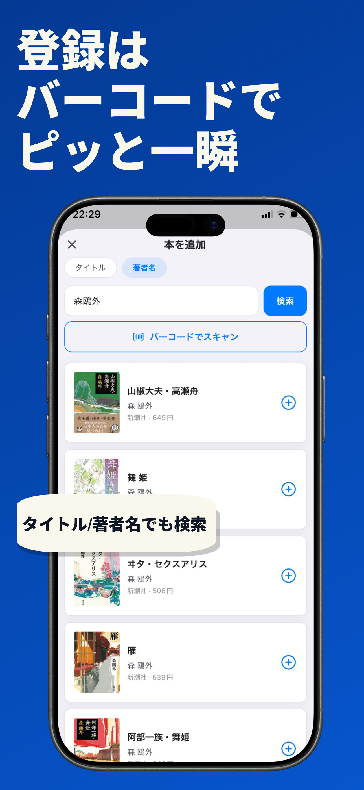
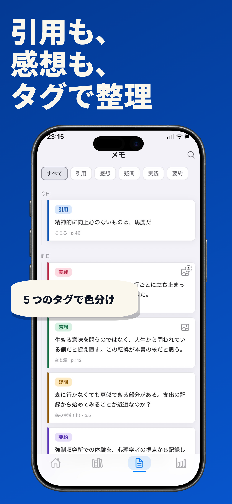
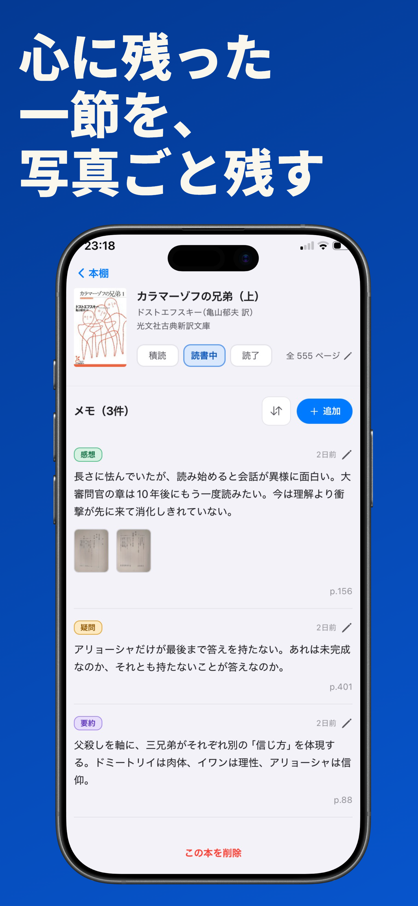
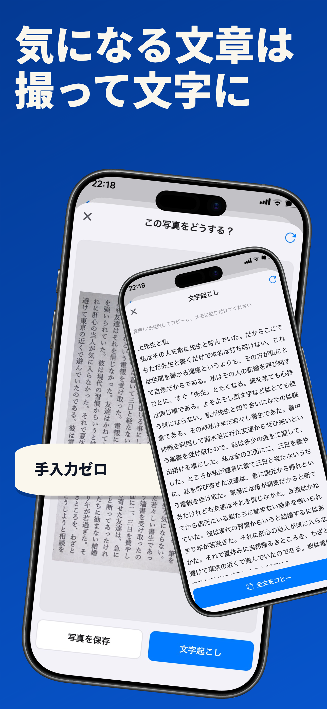
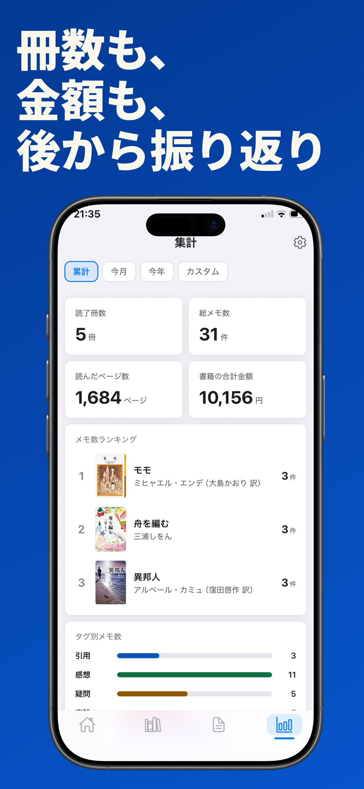

メモで深める読書記録アプリ
近日公開（iPhone対応）
「読んだ」で終わらせない読書記録アプリです。本の登録から、心に残った言葉のメモ、 読書量の振り返りまで。読書体験まるごとを、あなたの手のなかに残します。





本の裏のバーコードをかざすだけで、タイトル・著者・表紙を自動登録。タイトルや著者名からの検索にも対応しています。積読・読書中・読了のステータスで、いま読んでいる本もひと目で管理できます。
メモは「引用・感想・疑問・実践・要約」の5タグで色分け。ページ数をひも付けることで「あの一節どこだっけ？」がなくなります。タグでの絞り込み検索で、過去のメモもすぐに見つかります。
気に入ったページは、写真を添えてメモに保存。図表や目次などもビジュアルで記録できます。
本のページを撮影して文字起こし。長い引用も手入力ゼロで、読みたいところだけをそのままメモに貼り付けられます。
読了冊数・総メモ数・読んだページ数・書籍の合計金額を自動集計。メモ数ランキングやタグ別のグラフで、自分の読書のクセが見えてきます。
アプリ本体は無料です。すべての機能を使いたい方向けに、サブスクリプション「Yondock Pro」をご用意しています。
| 機能 | 無料 | Yondock Pro |
|---|---|---|
| 本・メモの登録数 | 無制限 | 無制限 |
| バックアップ・復元 | 可 | 可 |
| 写真の添付 | 1メモ1枚・合計10枚 | 無制限 |
| 文字起こし | 月5回 | 無制限 |
| テーマ | 標準のみ | 全4種 |
| 統計 | 累計のみ | 期間別 |
| エクスポート（Markdown / CSV） | — | 可 |
Yondock Pro：月額 400円 ／ 年額 3,500円（税込）。 購読の管理と解約は、iOSの「設定」＞（お名前）＞「サブスクリプション」から行えます。
本アプリはユーザー登録を必要とせず、登録した本・メモ・写真はすべて端末内にのみ保存されます。広告の表示やアクセス解析は行っていません。詳しくはプライバシーポリシーをご覧ください。
ご質問・ご要望は contact@yamamotostore.com または X @yondock までお寄せください。 アプリ内の「設定」→「ご意見・ご要望」からも送信できます。